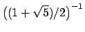

Next: 3.3 Plotting Up: 3. Extensions of Gnuplot's Previous: 3.1 The Commandline Environment Contents Index
In this section I shall outline the new and modified commands for controlling the graphic output format of Pyxplot.
The widths of plots may be set be means of two commands - set size and set width. Both are equivalent, and should be followed by the desired width measured in centimetres, for example:
set width 20
The set size command can also be used to set the aspect ratio of plots by following it with the keyword ratio. The number which follows should be the desired ratio of height to width. The following, for example would produce plots three times as high as they are wide:
set size ratio 3.0
The command set size noratio returns to Pyxplot's default aspect ratio of the golden ratio, i.e. , which matches that of a sheet of A4 paper3.3. The special command set size square sets the aspect ratio to unity.
In section 2.4 I described how the set terminal command can be used to produce plots in various graphic formats. In addition, I here describe how the way in which plots are displayed on the screen can be changed. The default terminal, X11, is used to send output to screen.
By default, each time a new plot is generated, if the previous plot is still open on the display, the X11 terminal will replace it with the new one, thus keeping only one plot window open at a time. This has the advantage that the desktop does not become flooded with plot windows.
If this behaviour is not desired, old plots can be kept visible when plotting further graphs by using the the X11_multiwindow terminal:
set terminal X11_singlewindow plot sin(x) plot cos(x) <-- first plot window disappears
c.f.:
set terminal X11_multiwindow plot sin(x) plot cos(x) <-- first plot window remains
As there are many changes to the options accepted by the set terminal command in comparison to those understood by gnuplot, the settings allowed in Pyxplot are listed below:
| x11_singlewindow | Displays plots on the screen (in X11 windows, using ghostview). Each time a new plot is generated, it replaces the old one, preventing the desktop from becoming flooded with old plots.3.4 [default when running interactively; see below] |
| x11_multiwindow | As above, but each new plot appears in a new window, and the old plots remain visible. As many plots as may be desired can be left on the desktop simultaneously. |
| postscript | Sends output to a postscript file. The filename for this file should be set using set output. [default when running non-interactively; see below] |
| eps | Equivalent to `postscript enhanced'. |
| colour | Allows datasets to be plotted in colour. Automatically they will be displayed in a series of different colours, or alternatively colours may be specified using the with colour plot modifier (see below). [default] |
| color | Equivalent to the above; provided for users of nationalities which can't spell. |
| monochrome | Opposite to the above; all datasets will be plotted in black. |
| enhanced | Modifier for the postscript terminal; sets it to produce encapsulated postscript (eps) files. These can be embedded in documents, but do not print reliably. |
| noenhanced | Modifier for the postscript terminal; opposite to the above; sets it to produce printable postscript files. |
| portrait | Sets plots to be displayed in upright (normal) orientation. [default] |
| landscape | Opposite of the above; produces side-ways plots. Not very useful when displayed on the screen, but you fit more on a sheet of paper that way around. |
| gif | Sends output to a gif image file; as above, the filename should be set using set output. |
| png | As above, but produces a png image. |
| jpg | As above, but produces a jpeg image. |
| invert | Modifier for the gif, png and jpg terminals; produces output with inverted colours.3.5 |
| noinvert | Modifier for the gif, png and jpg terminals; opposite to the above. [default] |
| transparent | Modifier for the gif and png terminals; produces output with a transparent background. |
| solid | Modifier for the gif and png terminals; opposite to the above. [default] |
The default terminal is normally x11_singlewindow, matching approximately the behaviour of gnuplot. However, there is an exception to this. When Pyxplot is used non-interactively - i.e. one or more command scripts is specified on the commandline, and Pyxplot exits as soon as it finishes executing them - the x11_singlewindow is not a very sensible terminal to use. Any plot window would close as soon as Pyxplot exited. The default terminal in this case changes to postscript.
One exception to this is when the special `-' filename is specified in a list of command scripts on the commandline, to produce an interactive terminal between running a series of scripts. In this case, Pyxplot detects that the session will be interactive, and defaults to the usual x11_singlewindow terminal.
An additional exception is on machines where the DISPLAY environment variable is not set. In this case, Pyxplot detects that it has access to no X-terminal on which to display plots, and defaults to the postscript terminal.
The gif, png and jpg terminals result in some loss of quality, since the plot has to be sampled into a bitmapped graphic format. By default, this sampling is performed at 300 dpi, though it may be changed using the command set dpi <value>. Alternatively, it may be changed using the DPI option in the settings section of a configuration file (see section 4.1).